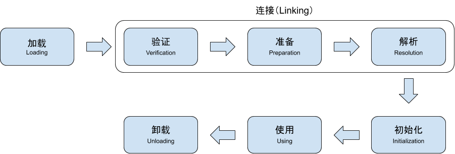

虚拟机类加载机制
1.类加载的过程
类从被加载到虚拟机内存开始，到卸载出内存为止，它的整个生命周期包括：加载（Loading）、验证（Verification）、准备（Preparation）、解析（Resolution）、初始化（Initialization）、使用（Using）和卸载（Unloading）七个阶段。其中验证、准备、解析3个部分统称为连接（Linking）。七个阶段的发生顺序如下图所示。
 加载、验证、准备、初始化和卸载这5个阶段的顺序是确定的，类的加载过程必须按照这种顺序按部就班地开始，而解析阶段在某些情况下可以在初始化阶段之后开始（这里用开始是因为这些阶段通常都是互相交叉地混合式进行的，通常会在一个阶段执行的过程中激活另一个阶段），目的是为了支持Java语言的运行时绑定（也称为动态绑定或者晚期绑定）。
1）加载
在加载阶段，虚拟机需要完成以下3件事情：
- 通过一个类的全限定名来获取定义此类的二进制字节流（zip包、网络、运算生成、JSP 生成、数据库读取等方式）。
- 将这个字节流所代表的静态存储结构转换为方法区的运行时数据结构。
- 在内存中生成一个代表这个类的java.lang.Class对象，作为方法区这个类的各种数据的访问入口。
一个非数组类的加载阶段（加载阶段中获取类的二进制字节流的动作）是可控性最强的，因为加载阶段可以使用系统提供的引导类加载器来完成，或者由用户自定义的类加载器去控制字节流的获取方式（即重写一个类加载器的loadClass()方法）。
对于数组类而言，数组类本身不通过类加载器创建，它是由Java虚拟机直接创建的。但数组类与类加载器仍然有很密切的关系，因为数组类的元素类型最终是要靠加载器去创建，一个数组类创建过程就遵循以下规则：
- 如果数组的组件类型是引用类型，那就递归采用上述的加载过程去加载这个组件类型，该数组将在加载该组件类型的类加载器的类名称空间上被标示。
- 如果数组的组件类型不是引用类型（如int[]数组），Java虚拟机会把数组标记为与引导类加载器关联。
- 数组类的可见性与它的组件类型的可见性一致，如果组件类型不是引用类型，那数组类的可见性将默认为public。
加载阶段完成后，虚拟机外部的二进制字节流就按照虚拟机所需的格式存储在方法区之中，然后在内存中实例化一个java.lang.Class类的对象（在HotSpot虚拟机而言，Class对象存放在方法区里），这个对象将作为程序访问方法区中这些类型数据的外部接口。加载阶段和连接阶段的部分内容（如一部分字节码格式验证动作）是交叉进行的，但这两个阶段的开始时间仍然保持着固定的先后顺序。
2）验证
验证是连接阶段的第一步，因为Java语言是相对安全的语言，虚拟机会拒绝编译诸如访问数组边界之外的数据、跳转到不存在的代码行的这类情况。但Class文件并不要求一点从Java源码编译而来，所以为了虚拟机不会因为载入有害字节流而导致系统奔溃，验证是一项虚拟机保护自身的重要措施。
验证大致分为下面四个阶段的检验动作：文本格式验证、元数据验证、字节码验证、符号引用验证。
- 文件格式验证
第一节阶段是验证字节流是否符合Class文件格式规范，并且能被当前版本的虚拟机处理。比如是否以魔数0xCAFEBABE开头、主次版本号是否在虚拟机的处理范围之内等。
该验证阶段的主要目的是保证输入的字节流能正确地解析并存储于方法区之中，其验证是基于二进制字节流进行的，只有通过了这个阶段的验证后，字节流才会进入内存的方法区中进行存储，所以后面的3个阶段验证全都是基于方法区的存储结构进行的，不会再直接操作字节流。
- 元数据验证
第二阶段的主要目的是对类的元数据信息进行语义校验，保证不存在不符合Java语言规范的元数据信息。
- 字节码验证
第三个阶段是整个验证过程中最复杂的阶段，目的是通过数据流和控制流的分析，确定程序语义是合法的、符合逻辑的。在第二阶段对元数据信息中的数据类型做完校验后，这个阶段将对类的方法进行校验分析，保证被校验的类的方法在运行时不会做出危害虚拟机安全的事件。
如果一个类的方法体的字节码没有通过字节码验证，那肯定是有问题的，但如果一个方法体通过了字节码验证，也不能说明其一定就是安全的，即使字节码验证之中进行了大量的检查也不能保证这一点。
虚拟机设计团队为了避免在字节码验证期间的时间消耗，在JDK1.6之后的给方法体的Code属性的属性表中增加了一项名为“StackMapTable”的属性，这项属性描述了方法体中所有基本块开始时本地变量表和操作栈应有的状态，在字节码验证期间就不需要根据程序推导这些状态的合法性，只需要检查StackMapTable属性中的记录是否合法性即可。
- 符号引用验证
最后一个阶段的校验发生在虚拟机将符号引用转化为直接引用的时候，这个转化动作将在解析阶段中发生。符号引用可以看作是对自身类以外的信息进行匹配性校验，确保解析动作能够正常执行，如果无法通过符号引用的验证，就会抛出一个java.lang.IncompatibleClassChangeError异常的子类。
3）准备
准备阶段是正式为类变量分配内存并设置类变量初始值的阶段，这些变量所使用的内存都将在方法区中进行分配。这个阶段进行内存分配的仅包括类变量（被static修饰的变量），而不包括实例变量，实例变量将在对象实例化时随着对象一起分配在Java堆中。另外还需要注意的是这里说的初始值在通常情况下是数据类型的零值，变量赋值的putstatic指令是程序被编译后，存放于类构造器
| 数据类型 | 零值 | 数据类型 | 零值 |
|---|---|---|---|
| int | 0 | boolean | FALSE |
| long | 0L | float | 0.0f |
| short | （short）0 | double | 0.0d |
| char | ‘\u0000’ | reference | null |
| byte | （byte）0 |
上面提到在通常情况下初始值是零值，那相对的会有一些特殊情况，如果类字段的字段属性表中存在ConstantValue属性（同时使用final 、static来修饰的变量，并且这个变量的数据类型是基本类型或者String类型），那在准备阶段变量值就会被初始化为ConstantValue属性所指定的值。
4）解析
解析阶段是虚拟机将常量池内的符号引用替换为直接引用的过程。
- 符号引用（Symbolic Reference）：符号引用以一组符号来描述所引用的目标，符号可以是任何形式的字面量，只要使用时能无歧义地定位到目标即可。符号引用与虚拟机实现的内存布局无关，引用的目标并不一定已经加载到内存中。各种虚拟机实现的内存布局可以各不相同，但它们能接受的符号引用必须都是一致的，因为符号引用的字面量形式明确定义在Java虚拟机规范的Class文件格式中。
- 直接引用（Direct Reference）：直接引用可以是直接指向目标的指针、相对偏移量或是一个能间接定位到目标的句柄。与虚拟机实现的内存布局相关的，同一个符号引用在不同的虚拟机实例上翻译出来的直接引用一般不会相同。如果有了直接引用，那引用的目标必定已经在内存中存在了。
- 解析发生的时间
虚拟机规范中并未规定解析阶段发生的具体时间，只要求了在执行anewarray、checkcast、getfield、getstatic、instanceof、invokedynamic、invokeinterface、invokespecial、invokestantic、invokevirtual、ldc、ldc_w、multianewarray、new、putfield和putstatic这16个用于操作符号引用的字节码指令之前，先对它们所使用的符号引用进行解析。所以虚拟机实现可以根据需要来判断到底是在类被加载时就对常量池中的符号引用进行解析，还是等到一个符号引用将要被使用前才去解析它。
- 同个符号引用进行多次解析
- 除invokedynamic指令之外，虚拟机实现可以对第一次解析的结果进行缓存（在运行时常量池中记录直接引用，并把常量标识为已解析状态）从而避免解析动作重复进行。在同一个实体中，如果一个符号引用之前已经被成功解析过，那么后续的引用解析请求就应当一直成功；如果第一次解析失败了，那么其他指令对这个符号的解析请求也应该收到相同的异常。
- 对于invokedynamic指令，当碰到某个前面已经由invokedynamic指令触发过解析的符号引用时，并不意味着这个解析结果对其他invokedynamic指令同样生效，因为invokedynamic指令的目的是用于动态语言支持，它所对应的引用称为“动态调用点限定符”，“动态”的含义就是必须等到程序实际运行到这条指令的时候，解析动作才会进行。相对的，其他可触发解析的指令都是“静态”的，可以在刚完成加载阶段，还没开始执行代码时就进行解析。
- 解析动作
解析动作主要针对类或接口、字段、类方法、接口方法、方法类型、方法句柄和调用点限定符7类符号引用进行，分别对应常量池中的7种常量类型。
5）初始化
类初始化阶段是类加载过程的最后一步，初始化阶段是执行类构造器
()方法是由编译器自动收集类中的所有类变量的赋值动作和静态语句块（static{}块）中的语句合并产生的，编译器收集的顺序是由语句在源文件中出现的顺序所决定的，静态语句块中只能访问到定义在静态语句块之前到变量，定义在它之后的变量，在前面的静态语句块可以赋值，但是不能访问。 ()方法与类的构造函数（或者说实例构造器 ()方法）不同，它不需要显式地调用父类构造器，虚拟机会保证在子类的 ()方法执行之前，父类的 ()方法已经执行完毕。因此在虚拟机中第一个执行的 ()方法的类肯定是java.lang.Object。 - 由于父类的
()方法先执行，也就意味着父类中定义的静态语句块要优先于子类的变量赋值操作。 ()方法对于类或接口来说并不是必须的，如果一个类中没有静态语句块，也没有对变量的赋值操作，那么编译器可以不为这个类生成 ()方法。 - 接口中不能使用静态语句块，但仍然有变量初始化的赋值操作，因此接口与类一样都会生成
()方法。但接口与类不同的是，执行接口的 ()方法不需要先执行父接口的 ()方法。只有当父接口中定义的变量时，父接口才会初始化。另外接口的实现类在初始化时也一样不会执行接口的 ()方法。 - 虚拟机会保证一个类的
()方法在多线程环境中被正确地加锁、同步，如果多个线程同时去初始化一个类，那么只会有一个线程去执行这个类的 ()方法，其他线程都需要阻塞等待，直到活动线程执行 ()方法完毕。如果在一个类的 ()方法中有耗时很长的操作，就可能造成多个线程阻塞。
2.类与类加载器
实现类加载阶段中“通过一个类的全限定名来获取描述此类的二进制字节流”的动作的代码模块被称为类加载器。对于任意一个类，都需要由加载它的类加载器和这个类本身一同确立其在Java虚拟机中的唯一性，即比较两个类是否相等（代表类的Class对象的equals()方法、isAssignableFrom()方法、isInstance()方法的返回结果和使用instanceof关键字做对象所属关系的判定），只有这两个类是由同一个类加载器加载的前提下才有意义，否则即使两个类来源于同一个Class文件，被同一个虚拟机加载，只要加载它们的类加载器不同，那这两个类就必定不相等。
3.双亲委派模型
从Java虚拟机的角度来讲，只存在两种不同的类加载器：一种是启动类加载器（Bootstrap ClassLoader），这个类加载器使用C++语言实现（在HotSpot虚拟机中），是虚拟机自身的一部分；另一种是所有其他的类加载器，由Java语言实现，独立于虚拟机外部，并且全都继承抽象类java.lang.ClassLoader。
从Java开发人员角度来看，将类加载器划分得更细致一些，绝大部分Java程序都会使用以下3种系统提供的类加载器。
- 启动类加载器（Bootstrap ClassLoader）：负责将存放在<JAVA_HOME>\lib目录中的，或者被-Xbootclasspath参数所制定的路径中的，并且是虚拟机识别的类库加载到虚拟机内存中。启动类加载器无法被Java程序直接引用，用户在编写自定义类加载器时，如果需要把加载请求委派给引导类加载器，那就直接使用null代替即可。
- 扩展类加载器（Extension ClassLoader）：这个加载器由sun.misc.Launcher$ExtClassLoader实现，它负责加载<JAVA_HOME>\lib\ext目录中的，或者被java.ext.dirs系统变量所指定的路径中的所有类库，开发者可以直接使用扩展类加载器。
- 应用程序类加载器（Application ClassLoader）：这个类加载器由sun.misc.Lanucher$AppClassLoader实现。由于这个类加载器是ClassLoader中的getSystemClassLoader()方法的返回值，所以一般也称它为系统类加载器。它负责加载用户类路径（ClassPath）上所指定的类库，开发者可以直接使用这个类加载器，如果应用程序中没有自定义过自己的类加载器，一般情况下这个就是程序中默认的类加载器
应用程序一般都是由以上这三种类加载器相互配合进行加载的，必要时可以加入自定义的类加载器，类加载器之间的关系如下图所示，被称为双亲委派模型（Parents Delegation Model）。
双亲委派模型要求除了顶层的启动类加载器外，其余的类加载器都应当有自己的父类加载器。这里类加载器之间的父子关系使用组合（Composition）关系来复用父类加载器的代码。
双亲委派模型的工作过程是：如果一个类加载器收到了类加载的请求，它首先不会自己去尝试加载这个类，而是把这个请求委派给父类加载器去完成，每一个层次的类加载器都是如此，因此所有的加载请求最终都会传递到顶层的启动类加载器中，只有当父加载器反馈自己无法完成这个加载请求（在其搜索范围中没有找到所需要的类）时，子加载器才会尝试自己去加载。
使用双亲委派模型来组织类加载器之间的关系的好处是Java类随着它的类加载器一起具备了一种带有优先级的层次关系，保证了一个类在程序的各种类加载器环境中都是同一个类，保证了程序的稳定运行。
下面是双亲委派模型的代码：先检查是否已经被加载过，若没有则调用父加载器的loadClass()方法，若父加载器为空则默认使用启动类加载器作为父加载器。如果父加载器加载失败，抛出ClassNotFoundException异常后，在调用自己的findClass()方法进行加载。
1 | protected Class<?> loadClass(String name, boolean resolve) throws ClassNotFoundException |